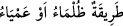
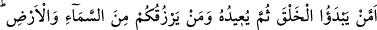
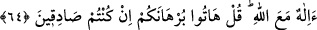
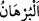

Allah’tan başka bir ilah mı var! Allah, onların koştukları ortaklardan çok yücedir,
münezzehtir.
“Yoksa karanın ve denizin karanlıkları içinde” yâni o ikisinin gecelerinde yıldızlarla
ve yeryüzündeki alâmetlerle veya karışık yollarda “size yolu bulduran,”
maksadlarınıza erdiren Allah mı hayırlı, yoksa putlar mı?
Aydınlığı olmayan yola “__WORD__ (çok karanlık veya kör yol)” denir.
“Rahmetinin” yağmurun “önünde rüzgârları müjdeci olarak gönderen mi?” Böyle
bir şeyi yapmaya muktedir olan “Allah’tan başka bir ilah mı var! Allah, onların
koştukları ortaklardan çok yücedir, münezzehtir.” Yaratan ve her şeye kâdir olan
Allah, âciz ve yaratılmış olan şeylerin kendisine ortak olmasından münezzehtir.
64. (Onlar mı hayırlı) yoksa ilk baştan yaratan, sonra yaratmayı tekrar eden ve
sizi hem gökten hem yerden rızıklandıran mı? Allah’tan başka bir ilah mı var! De
ki: Eğer doğru söylüyorsanız siz kesin delilinizi getirin!
“(Onlar mı hayırlı) yoksa ilk baştan yaratan,” yâni mahlûkâtı birinci defa var eden,
“sonra” ölümden sonra yeniden dirilterek “yaratmayı tekrar eden” yâni onları
öldürdükten yeniden yaratan mı hayırlıdır, yoksa ibâdette O’na ortak koştukları mı?
el-Kevâşî’de der ki: “Yağmurun indirilmesi, bitkilerin bitirilmesi ve kuruması, sonra
yeniden yeşertilmesi gibi ba’se/yeniden diriltilmeye delâlet eden deliller daha önce
geçtiği için, müşrikler ba’si (yeniden diriltilmeyi) inkâr ettikleri halde onlara ilk defa
yaratılmaları ve yeniden/tekrar yaratılmaları sorulmuştur. Akıl, bozulup çürüdükten
sonra yeniden yaratılmanın mümkün olduğuna hükmeder. Onlar da yok oldukları halde
sonradan var edildiklerini biliyorlardı. Var olduktan sonra yeniden yaratılmaları ise
daha kolaydır.”
“Ve sizi hem gökten hem yerden” yâni yere ve göğe âid sebeplerle “rızıklandıran
mı?” Bunları yapan “Allah’tan başka bir ilâh mı var! De ki: “Eğer” bu iddiâlarınızda
“doğru söylüyorsanız siz” Allah’tan başka bir ilâh olduğuna delâlet eden aklî veyâ
naklî “kesin delilinizi getirin!”
“__WORD__ delillerin en sağlamıdır. Burhân, her zaman doğru olması gereken delildir.
Sonra Allah Teâlâ daha önce geçen tam bir kudretin kendisine âid olduğu hususunu
tamamlamak ve ondan sonraki ba’s/yeniden diriltilme konusuna giriş olmak üzere gayb
ilminin sadece kendisine âid olduğunu şöyle beyân buyurdu:
İbn Hacer, Kâfî, III, 375.